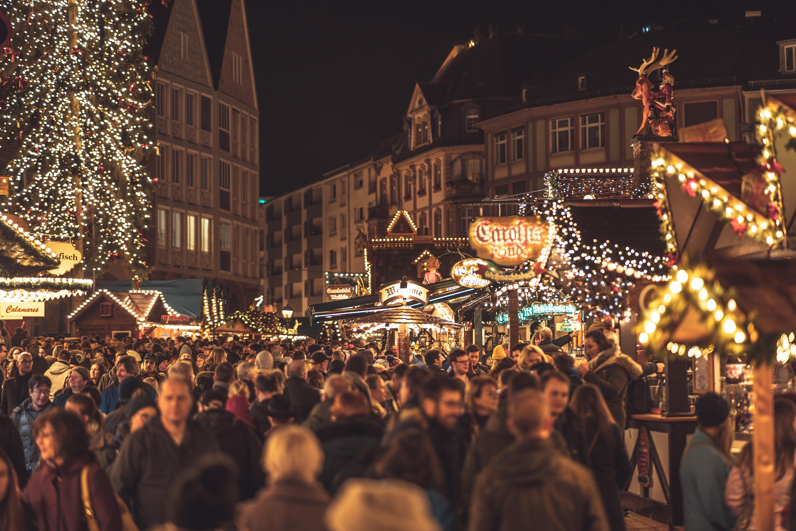

Almería vuelve a ser el escenario de una cita ineludible para todos los amantes de los oficios tradicionales. Las Jornadas de Artesanía 2026 llegan a su cuarta edición con un programa renovado que amplía su oferta de talleres y charlas, incorporando nuevas disciplinas y voces de referencia del panorama artesanal nacional e internacional.
Un programa pensado para todos los niveles
Uno de los aspectos más destacados de esta edición es la amplia oferta formativa, diseñada tanto para quienes se acercan a la artesanía por primera vez como para artesanos con experiencia que buscan profundizar en nuevas técnicas. Los talleres se dividen en cuatro grandes familias: cerámica y alfarería, textil y tejido, trabajo en madera y joyería artesanal.

Ponentes de referencia nacional
Entre los ponentes confirmados destacan la ceramista María Casals, conocida por su trabajo con gres y porcelana, y el ebanista Jordi Puigdomènech, especialista en la recuperación del mueble tradicional catalán. Ambos impartirán conferencias abiertas al público en el auditorio principal del centro cultural.
La charla inaugural correrá a cargo de Laura Vives, tejedora y fundadora del colectivo TeixinArt, que hablará sobre la revalorización del textil artesanal en un contexto de moda sostenible y de km 0.
Espacio para la compra directa al artesano
Como novedad de esta edición, el patio central del recinto acogerá un mercado artesanal en el que más de 40 artesanos expondrán y venderán sus piezas directamente al público. Los asistentes podrán adquirir cerámica, textiles, joyería y piezas de madera únicas, y conversar con sus creadores.

Cómo participar
La asistencia a las charlas es gratuita y no requiere inscripción previa. Los talleres, en cambio, tienen plazas limitadas y es necesario reservar con antelación a través del formulario disponible en la sección Programa. Se recomienda llegar con tiempo para garantizar el acceso.